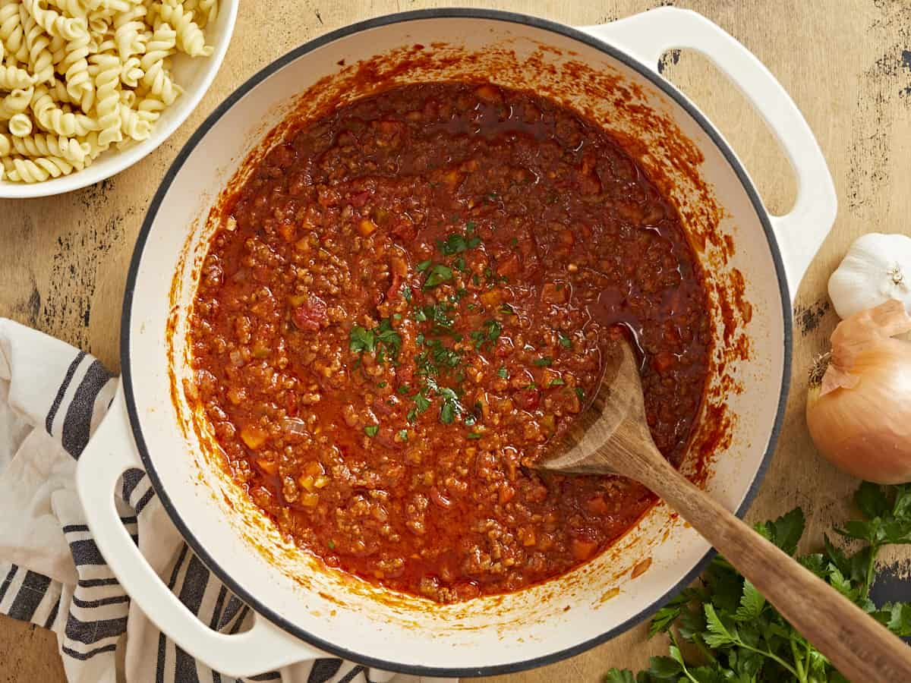

Bolognese

Description
Ingredients
- 1 small onion, cut into 1 inch pieces
- 2 tablespoons extra-virgin olive oil
- 2 cloves garlic,minced
- 1 pound ground beef
- 1 28 ounce can crushed tomatoes
- 1.5 teaspoons of dried oregano
- 3/4 teaspoon salt
- 1/4 teaspoon black pepper
Steps
- chop onions into thin, small pieces
- Heat olive oil in a large pot over medium heat, add onion, stirring
occasionally for around 10 minutes. Stir in garlic and cook until fragrant
- Add beef and cook, breaking meat apart with a wooden spoon or spatula,
until no longer pink. Stir in tomatoes, oregano, salt,
and pepper; bring to a boil. Reduce heat to a gentle simmer and cook,
stirring occasionally, for 1 hour.
- Season with salt and black pepper.